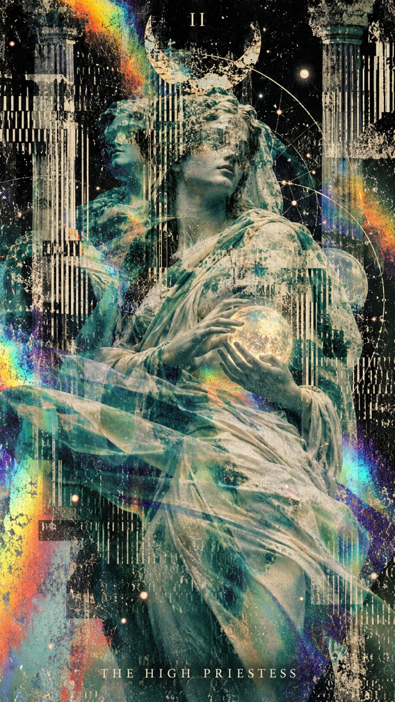

AN IMAGE PROCESSING LIBRARY
dither·to
Any image.
A fixed color palette.
ditherto renders images to a fixed color palette using a choice of dithering algorithms. Use it in the browser, in Node.js, or from the command line.
Try it here
Select a card to preview.
LIVE PREVIEW / THE HIGH PRIESTESS

Preparing pixels…WORKER STARTING
GET STARTED
Use it in your project.
Install ditherto from npm for your JavaScript or TypeScript project, or process a local image directly with the CLI.
COMMAND LINEPNG OUTPUT
Replace photo.jpg with your image path.
In the browser
With a browser bundler, add <img class="dither" src="photo.jpg"> to your page, then bind it below. Images rerender automatically when their layout size changes.
images.js / CURRENT SETTINGS
RESPONSIVE RENDERINGORIGINALS PRESERVED